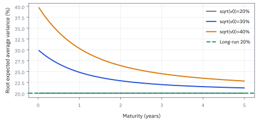
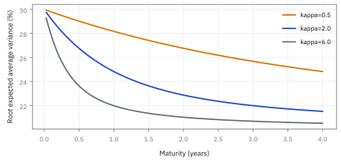
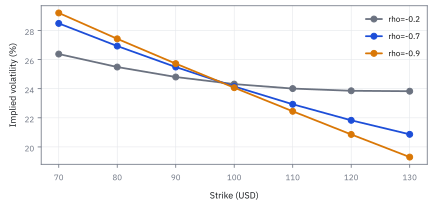
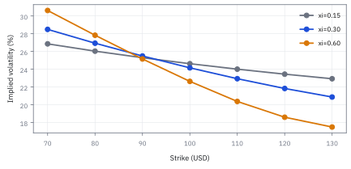

14.7 Stochastic Volatility and the Heston Model
ความผันผวนของหุ้นไม่ได้คงที่ แบบจำลอง Heston ให้ variance (ความผันผวนยกกำลังสอง) เดินสุ่มและถูกดึงกลับหาระดับปกติ ราคา option จึงขึ้นกับว่า variance กระจายแค่ไหนตลอดอายุ และเดินสวนทางกับหุ้นแค่ไหน ไม่ใช่ขึ้นกับค่าเฉลี่ยตัวเดียว
ทีมค้า option ของธนาคาร (ต่อไปเรียกว่า “โต๊ะ”) ต้องเสนอราคา call option ให้ลูกค้า call option คือสิทธิ์ซื้อหุ้นในราคาที่ตกลงไว้ล่วงหน้า (ราคานี้เรียกว่า strike) ในวันหมดอายุ ถ้าวันนั้นหุ้นแพงกว่า strike ผู้ถือได้ส่วนต่าง ถ้าถูกกว่า ผู้ถือไม่ใช้สิทธิ์และได้ศูนย์
ราคาของสิทธิ์นี้ขึ้นกับว่าหุ้นจะแกว่งแรงแค่ไหนจนถึงวันหมดอายุ ตัวเลขที่วัดการแกว่งเรียกว่าความผันผวน (volatility) คือ SD (standard deviation) ของผลตอบแทนต่อปี ช่วงนี้ตลาดแกว่งแรงกว่าปกติ และโต๊ะเชื่อว่าการแกว่งจะค่อย ๆ ลดกลับสู่ระดับปกติ
ของที่รู้ (ตัวเลขสมมติ):
- ราคาหุ้นวันนี้ $S_0=\$100$ และ strike $K=\$100$ (strike เท่าราคาวันนี้ เรียกว่า ATM หรือ at-the-money)
- อายุของสิทธิ์ $T=1$ ปี
- ดอกเบี้ย $r=3\%$ ต่อปี และหุ้นจ่ายปันผล $q=1\%$ ของราคาต่อปี
- ความผันผวนตอนนี้ 30% ต่อปี และระดับปกติระยะยาว 20% ต่อปี
- ความเร็วที่ถูกดึงกลับสู่ระดับปกติ $\kappa=2$ ต่อปี (ขั้นแรกของหน้านี้จะแสดงว่าตัวเลขนี้หมายถึงอะไร)
เด็กฝึกงานคิดว่า ในหนึ่งปีความผันผวนลดจาก 30% ลงไปหา 20% ก็ใช้ค่ากลาง $\sigma=(30\%+20\%)/2=25\%$ แล้วใส่สูตร Black–Scholes ซึ่งถือว่าความผันผวนคงที่ตลอดอายุ ($\Phi$ คือโอกาสสะสมของ Normal มาตรฐาน)
ราคา \$10.76 นี้ใช้ได้ไหม ถ้าไม่ได้ ควรเป็นเท่าไร?
ลองตอบก่อนเปิดเฉลย
ใช้ไม่ได้ แพงไปราว \$0.33 ต่อหุ้น มีสองเหตุผล
ข้อแรก สิ่งที่ลดลงเป็นเส้นโค้ง exponential คือ variance (ความผันผวนยกกำลังสอง $v=\sigma^2$) ไม่ใช่ตัวความผันผวน variance เริ่มที่ $0.30^2=0.09$ และถูกดึงไปหา $0.20^2=0.04$ ขั้นค่าคาดหมายของหน้านี้จะหาค่าเฉลี่ยของ variance ตลอดปีได้ 0.061617 รากของมันคือ $\sqrt{0.061617}=24.82\%$ และ Black–Scholes ที่ 24.82% ให้ \$10.6938
ข้อสอง ค่าเฉลี่ยตัวเดียวยังไม่พอ เพราะความผันผวนเองก็สุ่ม และมักพุ่งขึ้นตอนหุ้นร่วง แบบจำลอง Heston คิดทั้งสองเรื่อง และให้ราคา \$10.4348 (หน้านี้จะคำนวณให้ดูทีละขั้น) ราคานี้ตรงกับ Black–Scholes ที่ความผันผวน 24.15% ตัวเลขนี้เรียกว่า implied volatility ของราคา Heston
ส่วนต่าง \$0.26 ของข้อสองแยกเป็นสองก้อน \$0.18 มาจากการที่ variance สุ่ม และ \$0.08 มาจากการที่ variance เดินสวนทางกับหุ้น ขั้น “ทำไมราคาต่ำกว่า Black–Scholes” จะแยกให้ดู
ภาพรวมก่อนลงสูตร
หน้า volatility smile (กราฟของความผันผวนที่ตลาดใช้ เทียบกับ strike) และหน้า ผืนความผันผวน แสดงว่าตลาดไม่ได้ใช้ความผันผวนตัวเดียวกับทุก option มีสองแบบที่เห็นชัด
- skew: put คือสิทธิ์ขายหุ้นในราคา strike put ที่ strike ต่ำกว่าราคาวันนี้มาก ๆ ใช้ป้องกันตลาดร่วง และถูกตั้งราคาด้วยความผันผวนสูงกว่า strike อื่น
- term structure: option ที่อายุต่างกันถูกตั้งราคาด้วยความผันผวนต่างระดับกัน
สูตร Black–Scholes ถือว่าความผันผวน $\sigma$ คงที่ตลอดอายุ จึงสร้างทั้งสองแบบไม่ได้ ข้อมูลจริงยังมีอีกสองเรื่อง เรื่องแรก วันที่ราคาแกว่งแรงมักมาติด ๆ กันเป็นช่วง เรียกว่า volatility clustering เรื่องที่สอง ตอนตลาดร่วง ราคามักแกว่งแรงขึ้น
หน้านี้แก้ปัญหาด้วยการให้ variance ของหุ้น (ความผันผวนยกกำลังสอง) เป็นตัวแปรสุ่มที่มีสมการของตัวเอง ตามแบบจำลองของ Heston (1993) แล้วดูว่า term structure และ skew เกิดขึ้นเองได้อย่างไร
รูปด้านล่างแสดงแบบจำลองนี้ตอนทำงาน ความผันผวนเริ่มที่ 30% และถูกดึงลงหา 20% แต่ระหว่างทางเดินสุ่ม บางเส้นพุ่งขึ้นเกิน 40% บางเส้นลงต่ำกว่า 10% ช่องล่างคือผลตอบแทนรายวันของเส้นสีน้ำเงิน ช่วงที่ความผันผวนสูง แท่งยาวมาเป็นกลุ่ม
ทั้งหน้าใช้ตัวเลขชุดเดียวกัน ต่อไปเรียกว่า “ชุดหลัก” ทุกตัวเป็นตัวเลขสมมติ ไม่ได้ปรับจากตลาดจริง
| สัญลักษณ์ | ความหมาย | ค่า |
|---|---|---|
| $S_0,\ K$ | ราคาหุ้นวันนี้ และ strike | \$100, \$100 |
| $T$ | อายุของ option | 1 ปี |
| $r,\ q$ | ดอกเบี้ย และอัตราปันผลต่อปี | 3%, 1% |
| $v_0$ | variance วันนี้ ($0.30^2$ คือความผันผวน 30%) | 0.09 |
| $\theta$ | variance ระดับระยะยาว ($0.20^2$ คือความผันผวน 20%) | 0.04 |
| $\kappa$ | ความเร็วที่ variance ถูกดึงกลับหา $\theta$ | 2 ต่อปี |
| $\xi$ | vol-of-vol: ขนาดการแกว่งของ variance เอง | 0.3 ต่อปี |
| $\rho$ | correlation ระหว่างแรงสุ่มของหุ้นกับของ variance (ติดลบ: หุ้นลงเมื่อไร variance มักขึ้น) | −0.7 |
ลำดับของหน้า
- เดินแรงดึงกลับด้วยมือทีละไตรมาส โดยยังไม่มีความสุ่ม
- เขียนแบบจำลองเป็นสองสมการ
- หาค่าคาดหมายของ variance และ term structure ที่แบบจำลองสร้างเอง
- ตรวจเงื่อนไข Feller และเขียนวิธีจำลองทีละวัน
- ภาคขยายที่อ่านทีหลังได้: สร้างสมการตั้งราคา แล้วยุบเหลือสอง ODE ด้วย characteristic function
- แปลงกลับเป็นราคา call และตรวจด้วย Monte Carlo
- อธิบายว่าทำไมราคาต่ำกว่า Black–Scholes ที่ความผันผวนเฉลี่ย
- ดู smile ที่แบบจำลองสร้าง และจบที่การปรับค่าให้ตรงตลาด (calibration)
รูป — ความผันผวนสุ่มที่ถูกดึงกลับ และผลตอบแทนที่แกว่งเป็นกลุ่ม
ศัพท์ที่ใช้ในหัวข้อนี้
- Stochastic volatility
- แบบจำลองที่ให้ความผันผวน (ในหน้านี้ใช้ variance คือความผันผวนยกกำลังสอง) เป็นตัวแปรสุ่มที่มีสมการของตัวเอง แทนที่จะเป็นค่าคงที่ ใช้สร้าง smile, term structure และ volatility clustering ที่ Black–Scholes สร้างไม่ได้
- Risk-neutral measure ($\mathbb Q$)
- โลกสมมติที่ใช้ตั้งราคา ในโลกนี้ทุกสิ่งที่ซื้อขายได้โตเฉลี่ยเท่าดอกเบี้ย ราคา option คือค่าเฉลี่ยของสิ่งที่ option จ่ายในโลกนี้ คิดลดด้วยดอกเบี้ย (ที่มาอยู่ในหน้า พอร์ตทำซ้ำและ PDE ของ Black–Scholes) $\mathbb E^{\mathbb Q}$ คือค่าคาดหมายในโลกนี้
- Implied volatility
- ความผันผวนที่ต้องใส่ในสูตร Black–Scholes เพื่อให้ได้ราคาที่กำหนด ใช้แปลงราคาจากแบบจำลองใดก็ได้ให้เป็นภาษาเดียวกัน
- Mean reversion ($\kappa$ และ $\theta$)
- แรงที่ดึง variance กลับหาระดับระยะยาว $\theta$ ยิ่งอยู่ห่างจาก $\theta$ ยิ่งถูกดึงแรง $\kappa$ บอกว่าดึงเร็วแค่ไหน ที่ต้องมีแรงนี้เพราะในข้อมูลจริง ความผันผวนไม่อยู่สูงหรือต่ำไปตลอด
- Vol-of-vol ($\xi$)
- ขนาดการแกว่งของ variance เอง ยิ่ง $\xi$ ใหญ่ variance ยิ่งกระโดดไปมา ในชุดตัวอย่างนี้ $\xi$ ที่ใหญ่ขึ้นทำให้ smile โค้งมากขึ้น และทำให้ราคา ATM ต่ำลง
- Correlation $\rho$ และ leverage effect
- $\rho$ คือ correlation ระหว่างแรงสุ่มที่ขยับหุ้นกับแรงสุ่มที่ขยับ variance ในตลาดหุ้นมักติดลบ คือหุ้นลงแล้วความผันผวนขึ้น ปรากฏการณ์นี้เรียกว่า leverage effect $\rho$ เป็นตัวที่ทำให้ smile เอียง
- Characteristic function
- ค่าคาดหมาย $\mathbb E[e^{iu\log S_T}]$ เมื่อ $i=\sqrt{-1}$ และ $u$ เป็นจำนวนจริง มันคือ Fourier transform ของ density ของ $\log S_T$ จึงเก็บการแจกแจงไว้ครบ ใน Heston เราเขียน density เป็นสูตรปิดไม่ได้ แต่เขียนตัวนี้ได้ แล้วแปลงกลับเป็นราคาด้วยอินทิกรัลตัวเดียว
- Calibration
- การเลือกห้าตัวเลข $v_0$, $\theta$, $\kappa$, $\xi$, $\rho$ ให้ราคาจากแบบจำลองใกล้ราคาตลาดทุก strike และทุกอายุมากที่สุด โต๊ะทำทุกวัน ค่าที่ได้เป็นค่าใน risk-neutral measure ไม่ใช่ค่าที่วัดจากข้อมูลย้อนหลัง
- Full-truncation Euler
- วิธีจำลองทีละก้าวเวลา ทุกที่ที่ต้องถอดรากของ $v$ หรือใช้ $v$ ในแรงดึง ให้ใช้ $\max(v,0)$ แทน ที่ต้องทำเพราะการเดินเป็นก้าวขนาดจำกัดทำให้ $v$ ติดลบได้ แม้ในสมการต่อเนื่อง $v$ จะไม่ติดลบ
สัญลักษณ์และหน่วย
| สัญลักษณ์ | ความหมาย | หน่วย |
|---|---|---|
| $S_t,\ x_t=\log S_t$ | ราคาหุ้น และ log ของราคา | ดอลลาร์, ไม่มีหน่วย |
| $v_t$ | variance ณ ขณะนั้น (ความผันผวนคือ $\sqrt{v_t}$) | ต่อปี |
| $v_0,\ \theta$ | variance วันนี้ และระดับระยะยาว | ต่อปี |
| $\kappa,\ \xi$ | ความเร็วของแรงดึงกลับ และ vol-of-vol | ต่อปี |
| $\rho$ | correlation ระหว่าง $dW^S$ กับ $dW^v$ | ไม่มีหน่วย |
| $W^S,\ W^v,\ W^\perp$ | แรงสุ่มของหุ้น ของ variance และตัวอิสระที่ใช้ประกอบ | รากที่สองของปี |
| $r,\ q$ | ดอกเบี้ยและอัตราปันผลต่อเนื่อง | ต่อปี |
| $T,\ \tau=T-t,\ h$ | อายุ เวลาที่เหลือ และขนาดก้าวของการจำลอง | ปี |
| $\bar v_T$ | variance เฉลี่ยตลอดอายุ $\frac1T\int_0^Tv_t\,dt$ | ต่อปี |
| $\varphi(u),\ A,\ B$ | characteristic function และสองสัมประสิทธิ์ของมัน | ไม่มีหน่วย, ไม่มีหน่วย, ปี |
| $P_1,\ P_2$ | น้ำหนักของขาหุ้นและขา strike (บทเดียวกับ $\Phi(d_1)$, $\Phi(d_2)$) | ไม่มีหน่วย |
ขั้นที่ 1 — ลองด้วยมือ: variance ถูกดึงกลับทีละไตรมาส
ก่อนใส่ความสุ่ม ลองดูแรงดึงกลับอย่างเดียวก่อน ว่ามันพา variance จาก 0.09 ลงไปหา 0.04 อย่างไร และทำไมค่าเฉลี่ยตลอดปีจึงไม่เท่ากับค่าปลายปี
โจทย์ให้อะไรมาบ้าง:
- variance วันนี้ $v_0=0.09$ คือความผันผวน $\sqrt{0.09}=30\%$
- variance ระดับระยะยาว $\theta=0.04$ คือความผันผวน $\sqrt{0.04}=20\%$
- ความเร็วของแรงดึง $\kappa=2$ ต่อปี
- ขนาดก้าว $h=0.25$ ปี (หนึ่งไตรมาส) และปิดความสุ่มไว้ก่อน
กฎของแรงดึง: ทุกก้าว variance ขยับเข้าหา $\theta$ เป็นสัดส่วน $\kappa h$ ของระยะห่างที่เหลือ ในที่นี้ $\kappa h=2\times0.25=0.5$ คือขยับครึ่งหนึ่งของระยะห่างทุกไตรมาส
option อายุหนึ่งปีเจอ variance ทุกวันตลอดปี ไม่ใช่แค่วันสุดท้าย จึงต้องดูค่าเฉลี่ยด้วย ประมาณค่าเฉลี่ยตลอดปีได้จากค่าต้นไตรมาสทั้งสี่ค่า โดยให้แต่ละค่าใช้ตลอดไตรมาสของมัน
คำตอบ: ระยะห่างจาก 0.04 หดลงครึ่งหนึ่งทุกไตรมาส: 0.05, 0.025, 0.0125, 0.00625 และ 0.003125 ปลายปี variance จึงเหลือ 0.043125 แต่ค่าเฉลี่ยตลอดปี $\bar v_{\rm q}\approx0.0634$ สูงกว่าค่าปลายปีมาก เพราะช่วงครึ่งปีแรก variance ยังสูงอยู่ ขั้นค่าคาดหมายด้านล่างจะหาค่าเฉลี่ยนี้แบบแม่นยำ
ตรวจเองใน 10 วินาที: ก้าวไตรมาสหยาบเกินไป ถ้าแบ่งปีเป็น $n$ ก้าว ระยะห่างถูกคูณด้วย $1-\kappa/n$ ทุกก้าว ปลายปีจึงเหลือระยะห่าง $0.05(1-2/n)^n$ ที่ $n=4$ คือ $0.05(0.5^4)=0.003125$ ตรงกับข้างบน ถ้าซอยก้าวให้เล็กลง
บรรทัดสุดท้ายใช้ $(1-2/n)^n\to e^{-2}$ เมื่อ $n$ ใหญ่ขึ้น ค่า 0.046767 คือคำตอบแม่นยำ (เส้นน้ำเงินในรูปข้างล่าง)
รูป — ระยะห่างจากระดับระยะยาวหดครึ่งทุกไตรมาส
ขั้นที่ 2 — แบบจำลอง Heston: สองสมการและแรงสุ่มที่เกาะกัน
ขั้นแรกตัดความสุ่มทิ้งเพื่อดูแรงดึงกลับอย่างเดียว ตอนนี้ใส่ความสุ่มกลับเข้าไป แบบจำลอง Heston มีสองสมการ สมการแรกบอกว่าราคาหุ้นขยับอย่างไร สมการที่สองบอกว่า variance ขยับอย่างไร
สัญลักษณ์ $dW_t$ คือแรงสุ่มก้อนเล็ก ๆ ในช่วงเวลาสั้น $dt$ (ส่วนเพิ่มของ Brownian motion) มีค่าเฉลี่ยศูนย์และ variance $dt$ แบบจำลองนี้มีแรงสุ่มสองก้อน $dW^S$ ขยับหุ้น และ $dW^v$ ขยับ variance
สมการแรกคือ geometric Brownian motion แบบเดียวกับใน Black–Scholes เขียนใน risk-neutral measure ซึ่งหุ้นโตเฉลี่ยในอัตรา $r-q$ (ดอกเบี้ยหักปันผล) ต่างกันแค่ความผันผวนเป็น $\sqrt{v_t}$ ที่เปลี่ยนตามเวลา แทน $\sigma$ คงที่ สมการที่สองคือแรงดึงกลับของขั้นแรก บวกแรงสุ่มขนาด $\xi\sqrt{v_t}$ รูปรากที่สองนี้แบบเดียวกับแบบจำลองดอกเบี้ย Cox–Ingersoll–Ross
แรงสุ่มสองก้อนต้องมี correlation $\rho$ เราจึงสร้าง $dW^v$ จาก $dW^S$ ผสมกับแรงสุ่มอิสระอีกก้อน $dW^\perp$ แบบ Cholesky แล้วตรวจว่าขนาดและ correlation ออกมาถูก
ทำไมแรงสุ่มของ variance ต้องมี $\sqrt{v_t}$: เมื่อ $v$ เข้าใกล้ศูนย์ แรงสุ่ม $\xi\sqrt v$ ก็เล็กลงเอง ขณะที่แรงดึง $\kappa(\theta-v)$ ยังดันขึ้นด้วยขนาดเกือบ $\kappa\theta$ variance จึงไม่ถูกผลักลงไปติดลบ รูปรากที่สองนี้ยังเป็นเหตุให้สมการตั้งราคายุบเป็น ODE ได้ในภาคขยาย หน่วยของ $\xi$ คือต่อปี เพราะ $\xi\sqrt v\,dW$ ต้องมีหน่วยเดียวกับ $dv$
การตรวจขนาดใช้กฎคูณของ Itô หลายตัวแปร: แรงสุ่มก้อนเดียวยกกำลังสองได้ $dt$ และแรงสุ่มอิสระสองก้อนคูณกันได้ศูนย์ น้ำหนัก $\sqrt{1-\rho^2}$ ถูกเลือกมาให้ $(dW^v)^2$ ยังเป็น $dt$ พอดี ขณะที่ $dW^S\,dW^v=\rho\,dt$ คือ correlation เท่ากับ $\rho$ ตามที่ต้องการ
ค่า $\kappa$, $\theta$, $\xi$, $\rho$ ทั้งหมดในหน้านี้เป็นค่าใน risk-neutral measure ที่ใช้ตั้งราคา ไม่ใช่ค่าที่วัดจากราคาในอดีต
ขั้นที่ 3 — ค่าคาดหมายของ variance: ที่ปลายทางและเฉลี่ยตลอดอายุ
ขั้นแรกเดินแรงดึงกลับแบบหยาบทีละไตรมาส และไม่มีความสุ่ม ขั้นนี้หาคำตอบแม่นยำเมื่อมีความสุ่มแล้ว เพราะ $v_t$ สุ่ม เราจึงถามว่า “โดยเฉลี่ย” variance จะเป็นเท่าไร ให้ $m(t)$ คือค่าคาดหมายของ $v_t$ ใน risk-neutral measure
วิธีคือเอาค่าคาดหมายทั้งสองข้างของสมการ variance พจน์สุ่ม $\xi\sqrt v\,dW^v$ หายไป เพราะค่าคาดหมายของ Itô integral เป็นศูนย์ เหลือ ODE ธรรมดาแบบเดียวกับค่าเฉลี่ยของแบบจำลองดอกเบี้ย Vasicek จากนั้นเฉลี่ย $m(t)$ ตลอดอายุ เพราะ option อายุ $T$ เจอ variance ทุกช่วงตลอดอายุ ค่าเฉลี่ยนี้คือ $\bar v_T$ ในตารางสัญลักษณ์ ส่วนต่าง $v_0-\theta=0.09-0.04=0.05$ ใช้ในบรรทัดตัวเลข
หัวใจของขั้นนี้คือ $y'=-\kappa y$: ระยะห่าง $y$ จาก $\theta$ หดในอัตราที่เป็นสัดส่วนกับตัวมันเอง คำตอบจึงเป็น exponential $y(t)=y(0)e^{-\kappa t}$ ระยะห่างหายไปครึ่งหนึ่งทุก $\ln2/\kappa=0.6931/2=0.3466$ ปี หรือราว $0.3466\times12=4.2$ เดือน นี่คือรูปแม่นยำของ “หดครึ่งทุกไตรมาส” ในขั้นแรก
สูตรค่าเฉลี่ยตลอดอายุใช้สองเรื่อง เรื่องแรก เราสลับค่าคาดหมายกับอินทิกรัลได้ เพราะทั้งคู่เป็นการบวกแบบเชิงเส้น เรื่องที่สอง $\int_0^Te^{-\kappa t}dt=(1-e^{-\kappa T})/\kappa$
ตัวประกอบ $(1-e^{-\kappa T})/(\kappa T)$ อยู่ระหว่าง 0 กับ 1 เมื่ออายุสั้น มันเข้าใกล้ 1 ค่าเฉลี่ยจึงใกล้ $v_0$ เมื่ออายุยาว มันเข้าใกล้ 0 ค่าเฉลี่ยจึงใกล้ $\theta$ ที่ 1 ปี variance ปลายทางคือ 0.0468 แต่ค่าเฉลี่ยคือ 0.0616 ความผันผวน 25% ของเด็กฝึกงานจึงไม่ตรงกับทั้งสองค่า ($\sqrt{0.046767}=21.63\%$ และ $\sqrt{0.061617}=24.82\%$)
รูป — variance ที่คาดไว้ ณ เวลา t เทียบกับค่าเฉลี่ยสะสม

ขั้นที่ 4 — term structure ที่แบบจำลองสร้างเอง
term structure คือการที่ option อายุต่างกันถูกตั้งราคาด้วยความผันผวนต่างกัน ใน Black–Scholes เราต้องใส่ความผันผวนแยกทีละอายุเอง ขั้นนี้ดูว่า Heston สร้างมันเองได้จากสูตรค่าเฉลี่ยของขั้นก่อน
โจทย์ให้อะไรมาบ้าง: ชุดหลักเดิม และสูตร $\mathbb E[\bar v_T]=\theta+(v_0-\theta)\frac{1-e^{-\kappa T}}{\kappa T}$ ให้หาตัวแทนความผันผวน $\sqrt{\mathbb E[\bar v_T]}$ ที่อายุ 3 เดือน 1 ปี และ 5 ปี ที่สามอายุนี้ $\kappa T=0.5$, 2 และ 10 ตัวแทนนี้ยังไม่ใช่ implied volatility ของแบบจำลอง ขั้น “ทำไมราคาต่ำกว่า Black–Scholes” จะอธิบายส่วนต่าง
คำตอบ: ตัวแทนความผันผวนลดจาก 28.17% ที่ 3 เดือน เป็น 24.82% ที่ 1 ปี และ 21.21% ที่ 5 ปี นี่คือ term structure ขาลง แบบที่ตลาดมีหลังช่วงที่แกว่งแรง และแบบจำลองสร้างมันเองโดยไม่ต้องใส่ความผันผวนทีละอายุ
แต่ละตัวเลขคุมคนละส่วน $v_0$ คุมปลายอายุสั้น $\theta$ คุมปลายอายุยาว และ $\kappa$ คุมว่าเปลี่ยนจากปลายหนึ่งไปอีกปลายเร็วแค่ไหน implied volatility ATM จริงของแบบจำลองต่ำกว่าตัวเลขเหล่านี้เล็กน้อย (ที่ 1 ปีคือ 24.15% ไม่ใช่ 24.82%) ขั้น “ทำไมราคาต่ำกว่า Black–Scholes” อธิบายว่าทำไม
ตรวจเองใน 10 วินาที: ในสูตร $\kappa$ กับ $T$ อยู่คู่กันเป็น $\kappa T$ เสมอ ดังนั้น $\kappa=0.5$ ที่อายุ 4 ปีให้ $\kappa T=0.5\times4=2$ เท่ากับ $\kappa=2$ ที่ 1 ปี ตัวแทนความผันผวนจึงเป็น 24.82% เท่ากัน เส้น $\kappa=0.5$ ในรูปความเร็วของแรงดึงกลับจึงเป็นเส้น $\kappa=2$ ที่ยืดแกนเวลาออกสี่เท่า
รูป — variance วันนี้คุมอายุสั้น ระดับระยะยาวคุมอายุยาว

รูป — ความเร็วของแรงดึงกลับกำหนดความชันของ term structure

ขั้นที่ 5 — เงื่อนไข Feller และการจำลองทีละวัน
ก่อนจำลองเส้นทางด้วยคอมพิวเตอร์ ต้องตอบสองคำถาม ข้อแรก ในสมการต่อเนื่อง variance แตะศูนย์ได้ไหม ข้อสอง เมื่อเดินเป็นก้าวขนาดจำกัด จะกันไม่ให้ $v$ ติดลบได้อย่างไร (เพราะรากที่สองของจำนวนลบคิดไม่ได้)
ข้อแรกตอบด้วยเงื่อนไขของ Feller (1951) ซึ่งหน้านี้รับมาใช้โดยไม่พิสูจน์: ถ้า $2\kappa\theta\ge\xi^2$ แรงดึงขึ้นใกล้ศูนย์ชนะแรงสุ่ม และ variance ไม่แตะศูนย์เลย
ข้อสองตอบด้วยวิธีเดินแบบ full truncation ซึ่งต่อยอดจากการจำลอง SDE แบบ Euler: ทุกที่ที่ต้องใช้ $v$ ให้ใช้ $v^+=\max(v_j,0)$ แทน ในสูตรด้านล่าง $j$ คือหมายเลขก้าว $h$ คือขนาดก้าว $Z_1$ และ $Z_2$ คือเลขสุ่ม Normal มาตรฐานที่อิสระกัน สุ่มใหม่สองตัวทุกก้าว หุ้นเดินในรูป $x=\log S$ ซึ่งมี drift $r-q-\tfrac12v$ จาก Itô's lemma (พจน์ $-\tfrac12v$ มาจากความโค้งของฟังก์ชัน log)
ชุดหลักผ่าน Feller สบาย ๆ เพราะ $\xi$ ขึ้นได้ถึง 0.40 โดยยังผ่าน แต่ถ้า $\xi=0.6$ จะได้ $\xi^2=0.36\gt0.16$ จึงไม่ผ่าน การไม่ผ่านไม่ได้แปลว่าแบบจำลองใช้ไม่ได้ แปลว่า variance แตะศูนย์ได้แล้วเด้งกลับ ซึ่งทำให้การจำลองยากขึ้น
แม้จะผ่าน Feller ค่าดิบ $v_{j+1}$ ก็ยังติดลบได้ เพราะก้าวที่มีขนาดจำกัดกระโดดข้ามศูนย์ได้ ในการจำลองของขั้น Monte Carlo (วันละก้าว $h=1/252$ ปี จาก 252 วันทำการต่อปี และ 50,000 เส้นทาง) ค่าดิบติดลบ 0.0045% ของก้าวทั้งหมด ถ้า $\xi=0.6$ ตัวเลขนี้ขึ้นเป็น 3.75% (ทั้งสองค่านับจากการจำลองในโค้ดท้ายหน้า) การใช้ $\max(v,0)$ ทำให้ถอดรากได้เสมอ ส่วนค่าดิบยังเก็บไว้เป็นจุดเริ่มของก้าวถัดไป
จุดที่พลาดง่ายที่สุด: $Z_1$ ตัวเดียวกันต้องอยู่ในทั้งสมการหุ้นและสมการ variance เพราะมันคือส่วนที่สองตัวนี้ใช้ร่วมกัน ถ้าสุ่มตัวใหม่ให้หุ้น correlation จะหายไปเงียบ ๆ รูปเส้นทางในภาพรวมสร้างด้วยสูตรนี้ทุกก้าว
ภาคขยาย ขั้นที่ 6–8 — จาก PDE ถึง characteristic function (อ่านทีหลังได้)
ขั้นที่ 6 — สมการตั้งราคาเมื่อ variance เป็นตัวแปรที่สอง
ในพอร์ตทำซ้ำและ PDE ของ Black–Scholes ราคา option เป็นฟังก์ชันของสองตัว คือราคาหุ้น $S$ และเวลา $t$ ตอนนี้ variance เปลี่ยนได้ด้วย ราคาจึงเป็นฟังก์ชันของสามตัว $C(t,S,v)$
หลักที่ใช้: ใน risk-neutral measure ราคาของทุกสิ่งที่ซื้อขายได้ต้องโตเฉลี่ยในอัตราดอกเบี้ย $r$ เราจึงหาส่วน drift (ส่วนที่ไม่สุ่ม) ของ $dC$ ด้วย Itô สองตัวแปร แล้วตั้งให้เท่ากับ $rC\,dt$ ตัวห้อยเช่น $C_S$ และ $C_{Sv}$ คืออนุพันธ์ย่อยตามตัวแปรนั้น
Itô ต่างจากแคลคูลัสธรรมดาตรงที่พจน์อันดับสองไม่หายไป เพราะผลคูณของแรงสุ่มมีขนาด $dt$ ส่วนสุ่มของ $dS$ คือ $S\sqrt v\,dW^S$ ยกกำลังสองได้ $S^2v\,dt$ ส่วนสุ่มของ $dv$ คือ $\xi\sqrt v\,dW^v$ ยกกำลังสองได้ $\xi^2v\,dt$ และผลคูณของทั้งสองได้ $S\sqrt v\cdot\xi\sqrt v\cdot\rho\,dt=\rho\xi vS\,dt$ พจน์ที่ยังมี $dW$ มีค่าคาดหมายเป็นศูนย์ จึงไม่อยู่ใน drift สมการสุดท้ายคือ PDE ของ Heston
เทียบกับ PDE ของ Black–Scholes มีพจน์ใหม่สามพจน์ คือ drift ของ $v$ ($\kappa(\theta-v)C_v$) ความโค้งตาม $v$ ($\tfrac12\xi^2vC_{vv}$) และพจน์ไขว้ $\rho\xi vSC_{Sv}$ ซึ่งเป็นที่เดียวที่ $\rho$ เข้ามา ถ้า $\xi=0$ และ $v_0=\theta$ variance จะคงที่ และสมการกลับเป็นของ Black–Scholes
เรื่อง hedge (ถือสินทรัพย์อื่นเพื่อหักล้างความเสี่ยงของ option): แบบจำลองนี้มีแรงสุ่มสองก้อน แต่มีหุ้นตัวเดียว การ hedge ด้วยหุ้นอย่างเดียวจึงไม่พอ ต้องใช้ option อีกตัวช่วย ส่วนราคาที่ตลาดคิดสำหรับความเสี่ยงจากความผันผวน ถูกรวมไว้ใน $\kappa$ กับ $\theta$ ของ risk-neutral measure แล้ว
ขั้นที่ 7 — characteristic function ยุบ PDE เหลือสอง ODE
PDE นี้แก้ด้วยกริดในคอมพิวเตอร์ได้ แต่ต้องคำนวณหลายจุด Heston ใช้อีกทาง แทนที่จะหาราคาตรง ๆ ให้หา characteristic function ของ $x_T=\log S_T$ ก่อน คือ $f=\mathbb E^{\mathbb Q}[e^{iux_T}]$ เมื่อรู้ค่าปัจจุบัน $x_t=x$ และ $v_t=v$ ตัวนี้เก็บการแจกแจงของ $x_T$ ไว้ครบ ขั้นราคา call จะแปลงมันกลับเป็นราคา
$f$ เป็นค่าคาดหมายใน risk-neutral measure เหมือนราคา จึงทำตาม PDE เดียวกัน เพียงไม่มีการคิดลด และเขียนด้วย $x$ แทน $S$ ให้ $\tau=T-t$ คือเวลาที่เหลือ จากนั้นเดาว่า $f$ เป็น exponential ของฟังก์ชันเชิงเส้นใน $x$ และ $v$ ถ้าเดาถูก PDE ต้องยุบเหลือสมการธรรมดาได้
ทำไม $f$ ทำตาม PDE เดียวกัน: $f$ เป็นค่าคาดหมายของฟังก์ชันของ $x_T$ เหมือนราคาที่ยังไม่คิดลด จึงไม่มีพจน์ $-rC$ เพราะ $\tau=T-t$ นับถอยหลัง อนุพันธ์ตามเวลาจึงกลับเครื่องหมาย $f_t=-f_\tau$ drift ของ $x$ คือ $r-q-\tfrac12v$ ตามขั้นเงื่อนไข Feller และการจำลอง ส่วน $(dx)^2=v\,dt$ และ $dx\,dv=\rho\xi v\,dt$
เมื่อแทนรูปที่เดาลงไป อนุพันธ์ทุกตัวหารด้วย $f$ แล้วเหลือแค่ $iu$, $-u^2$, $B$, $B^2$ และ $iuB$ สมการทั้งสองข้างจึงเป็นเส้นตรงใน $v$ และต้องเท่ากันทุกค่าของ $v$ ดังนั้นพจน์ที่ไม่มี $v$ ต้องเท่ากัน และสัมประสิทธิ์หน้า $v$ ต้องเท่ากัน ได้สองสมการ
ผลคือ ODE สองตัว สมการของ $B$ มี $B^2$ อยู่ (สมการแบบนี้เรียกว่า Riccati) และไม่มี $A$ จึงแก้ได้ก่อน จากนั้นได้ $A$ จากการอินทิเกรต $iu(r-q)+\kappa\theta B$ เงื่อนไข $A(0)=B(0)=0$ มาจากวันหมดอายุ ($\tau=0$) ซึ่ง $f=e^{iux}$ พอดี
ตรวจทันที: ลอง $u=-i$ จะได้ $u^2+iu=-1+1=0$ สมการของ $B$ จึงให้ $B=0$ ตลอด และ $A'=i(-i)(r-q)=r-q$ จึงได้ $A=(r-q)T$ ดังนั้น $f=e^{x+(r-q)T}=Se^{(r-q)T}=\mathbb E^{\mathbb Q}[S_T]$ ตรงกับราคา forward (ราคาหุ้นที่คาดในวันหมดอายุ ในโลกตั้งราคา)
ขั้นที่ 8 — คำตอบของสอง ODE และการตรวจด้วยเครื่อง
สมการของ $B$ เป็น Riccati ที่มีคำตอบปิด (Heston 1993) ขั้นนี้รับคำตอบมาใช้โดยไม่แก้เอง ในรูปที่คำนวณได้เสถียร ($g$ สร้างจาก $b-d$ และใช้ $e^{-dT}$) $b$, $d$ และ $g$ เป็นแค่ตัวช่วยย่อสูตร เราไม่เชื่อสูตรเปล่า ๆ แต่ตรวจกับการแก้สอง ODE ด้วยเครื่อง (วิธี RK4) ที่ $u=1$
การตรวจแรก: เดินสอง ODE ด้วย RK4 2,000 ก้าว จาก $\tau=0$ ถึง 1 ที่ $u=1$ ได้ $A$ และ $B$ ต่างจากสูตรปิดไม่ถึง $10^{-15}$ การตรวจที่สอง: ที่ $u=-i$ สูตรให้ $\varphi(-i)=102.0201$ เท่ากับราคา forward $100e^{(0.03-0.01)\times1}=100e^{0.02}=102.0201$
ตำราบางเล่มเขียนคำตอบเดียวกันด้วย $\cosh$ กับ $\sinh$: ตัวส่วนเป็น $\big(\cosh\tfrac{dT}2+\tfrac bd\sinh\tfrac{dT}2\big)^{2\kappa\theta/\xi^2}$ และพจน์ของ $v_0$ เป็น $-(u^2+iu)v_0/(d\coth\tfrac{dT}2+b)$ ทั้งสองรูปให้ตัวเลขเดียวกันทุกหลักที่ $u=0.5$, 1 และ 3
ทำไมต้องใช้รูปที่มี $e^{-dT}$: บทความของ Heston เองใช้ $e^{+dT}$ และในรูปนั้น log ของจำนวนเชิงซ้อนกระโดดข้ามกิ่งได้เมื่ออายุยาว (log เชิงซ้อนมีหลายค่าที่ต่างกันทีละ $2\pi i$ และโค้ดเลือกได้แค่ค่าเดียว) ราคาจะกระโดดโดยไม่มีอะไรเตือน รูปที่ใช้ที่นี่ตามแนวทางของ Albrecher และคณะ (2007) ช่วยเลี่ยงปัญหานี้
ขั้นที่ 9 — จาก characteristic function เป็นราคา call
ตอนนี้มี characteristic function $\varphi(u)$ ของ $x_T=\log S_T$ แล้ว ($\varphi$ คือ $f$ ของภาคขยาย คิดที่วันนี้ ถ้าข้ามภาคขยายมา ให้ถือว่า $\varphi$ เป็นสูตรที่คำนวณได้) ขั้นนี้แปลงมันเป็นราคา call
call จ่าย $(S_T-K)^+$ คือ $S_T-K$ ถ้าเป็นบวก และศูนย์ถ้าไม่เป็นบวก จึงแยกเป็นสองขาเหมือนใน Black–Scholes ขาหุ้นคือได้หุ้นเมื่อ $S_T\gt K$ ขา strike คือจ่าย $K$ เมื่อ $S_T\gt K$ เขียนได้เป็น $C=e^{-rT}\mathbb E^{\mathbb Q}[S_T\mathbf 1_{S_T\gt K}]-Ke^{-rT}\mathbb Q(S_T\gt K)$ เมื่อ $\mathbf 1_{S_T\gt K}$ มีค่า 1 ถ้าเงื่อนไขจริง และ 0 ถ้าไม่จริง
ต้องหาสองตัวนี้จาก $\varphi$ สูตรกลับในบรรทัดแรกด้านล่าง (สูตร Gil-Pelaez) ให้โอกาสที่ $x_T\gt k$ จาก characteristic function หน้านี้รับมาใช้ ส่วนหน้า Fourier และ FFT pricing สร้างมันเต็ม ขาหุ้นใช้ $\varphi_1$ ซึ่งได้จากการถ่วงทุกผลลัพธ์ด้วย $S_T$
$P_2=\mathbb Q(S_T\gt K)$ ได้จากสูตรกลับกับ $\varphi$ ที่ $k=\log K=\log100$ ส่วน $P_1$ ใช้สูตรเดียวกันกับ $\varphi_1$ ทำไมการแทน $u-i$ จึงเท่ากับถ่วงด้วย $S_T$: เพราะ $e^{i(u-i)x}=e^{iux}e^{x}=e^{iux}S_T$ จากนั้นหารด้วย $\varphi(-i)=\mathbb E[S_T]=F$ (ราคา forward) เพื่อให้น้ำหนักรวมเป็นหนึ่ง ขาหุ้นจึงเป็น $e^{-rT}FP_1=S_0e^{-qT}P_1$
ตัวเลขในสูตรราคาคือ $S_0e^{-qT}=100e^{-0.01}=99.0050$ และ $Ke^{-rT}=100e^{-0.03}=97.0446$ ส่วน $P_1$ และ $P_2$ ได้จากอินทิกรัลเชิงตัวเลขในโค้ดท้ายหน้า $P_1$ กับ $P_2$ ทำหน้าที่เดียวกับ $\Phi(d_1)$ และ $\Phi(d_2)$ ใน Black–Scholes และเป็นโอกาสในโลกตั้งราคา ไม่ใช่โอกาสได้กำไรในโลกจริง
ตรวจสูตรกลับกับกรณีที่รู้คำตอบ: ถ้าใส่ characteristic function ของ lognormal (การแจกแจงของ Black–Scholes) ที่ความผันผวน 24.82% สูตรกลับให้ 0.482635 เท่ากับ $\Phi(d_2)$ ของ Black–Scholes ทุกหลักที่พิมพ์ อินทิกรัลคิดด้วยวิธี Simpson 3,000 ช่วง บน $u$ จาก 0 ถึง 150 การตัดที่ 150 ทำได้เพราะ $|\varphi|$ ลดเร็ว ที่ $u=40$ เหลือแค่ $2.4\times10^{-6}$
ราคา \$10.4348 ตรงกับ Black–Scholes ที่ความผันผวน 24.15% ตัวเลขนี้จึงเป็น implied volatility ของราคา Heston (โค้ดหามันด้วยการแบ่งครึ่งช่วง)
ตรวจกับชุดตัวเลขอีกชุดที่รู้คำตอบจากวิธี FFT: $\kappa=2$, $\theta=0.05$, $\xi=0.3$, $\rho=-0.7$, $v_0=0.04$, $S_0=100$, $K=80$, $T=1$, $r=5\%$ และไม่มีปันผล สูตรกลับให้ 25.2428 ตรงกับ FFT ทุกหลัก (ถ้าใช้ Black–Scholes ที่ความผันผวน 30% กับชุดเดียวกันจะได้ 26.4621 ต่างกันชัด)
ถ้าต้องการราคาหลาย strike พร้อมกัน ใช้วิธี FFT ของ Carr–Madan ได้ วิธีนี้คูณราคา call ด้วย $e^{\alpha k}$ (เมื่อ $k=\log K$) เพื่อให้ฟังก์ชันอินทิเกรตได้ แล้วคำนวณ $N$ strike ในเวลาราว $N\log N$ แต่ต้องเลือก $\alpha$ และกริดให้ดี เมื่อลองกับชุดตรวจนี้ $\alpha=0.01$ ให้ราคาเพี้ยนเป็นหลักร้อย ส่วน $\alpha$ ตั้งแต่ 0.5 ถึง 10 บนกริด $2^{10}$ จุด ให้ 25.2428 เท่ากันทุกตัว
ขั้นที่ 10 — ตรวจด้วย Monte Carlo โดยมีหุ้นเป็นตัวช่วย
ราคา \$10.4348 มาจากสูตรยาวหลายชั้น จึงควรตรวจด้วยวิธีที่ไม่ใช้สูตรนั้นเลย คือจำลองเส้นทางจำนวนมากแล้วเฉลี่ยสิ่งที่ option จ่าย วิธีนี้เรียกว่า Monte Carlo
โจทย์ให้อะไรมาบ้าง:
- จำลองตามวิธีของขั้นเงื่อนไข Feller วันละก้าว ($h=1/252$ ปี) 50,000 เส้นทาง ด้วยเลขสุ่มชุด seed 14 (seed คือเลขตั้งต้นของตัวสุ่ม ใช้ seed เดิมได้ผลเดิมทุกครั้ง)
- ทุกเส้นทางเก็บสองค่า คือสิ่งที่ call จ่ายคิดลดถึงวันนี้ $Y=e^{-rT}(S_T-100)^+$ และราคาหุ้นปลายทางคิดลดถึงวันนี้ $X=e^{-rT}S_T$
ค่าเฉลี่ยจริงของ $X$ รู้แน่นอน เพราะในโลกตั้งราคาหุ้นโตเฉลี่ยในอัตรา $r-q$ จึงได้ $\mathbb E[X]=e^{-rT}S_0e^{(r-q)T}=S_0e^{-qT}=99.0050$ ถ้าเส้นทางที่สุ่มได้ทำให้ค่าเฉลี่ย $\bar X$ สูงเกินจริง ค่าเฉลี่ย $\bar Y$ ก็มักสูงเกินไปด้วย เพราะ call ขึ้นตามหุ้น เราจึงหักส่วนที่เกินออก โดยคูณด้วยความชัน $\beta$ ของ $Y$ เทียบกับ $X$ เทคนิคนี้เรียกว่า control variate ตัวเลขหลัง ± คือ SE (standard error) ของค่าเฉลี่ย ซึ่งวัดความคลาดจากการสุ่ม
คำตอบ: ค่าเฉลี่ยตรง ๆ 10.5968 ห่างจากราคาสูตร 10.4348 อยู่ $(10.5968-10.4348)/0.0645=2.5$ เท่าของ SE ซึ่งมากผิดปกติ สาเหตุคือเส้นทางชุดนี้บังเอิญให้หุ้นขึ้นมากไป ($\bar X=99.2366$ แทน 99.0050) พอหักด้วย $\beta$ ได้ 10.4727 ± 0.0313 ห่างจากราคาสูตร $(10.4727-10.4348)/0.0313=1.2$ SE ซึ่งเป็นระยะปกติของการสุ่ม และ SE ลดลงเกือบครึ่ง ($0.0313/0.0645=0.49$) สองวิธีจึงสอดคล้องกัน
ข้อควรระวัง: SE วัดแค่ความคลาดจากการสุ่ม ยังต้องลองลดขนาดก้าวเวลา เพื่อดูความคลาดที่เกิดจากการเดินเป็นก้าว (bias) ด้วย
ตรวจเองใน 10 วินาที: $\beta=0.54$ ต้องอยู่ระหว่าง 0 กับ 1 เพราะเมื่อหุ้นขึ้น \$1 สิ่งที่ call จ่ายขึ้นไม่เกิน \$1 และไม่เคยลด
ขั้นที่ 11 — ทำไมราคาต่ำกว่า Black–Scholes ที่ความผันผวนเฉลี่ย
ราคา Heston \$10.4348 ต่ำกว่าราคา Black–Scholes ที่ความผันผวนเฉลี่ย 24.82% (คือ \$10.6938) อยู่ \$0.26 ขั้นนี้แยกว่าส่วนต่างมาจากไหน
โจทย์ให้อะไรมาบ้าง: ให้ $C_{\rm BS}(w)$ คือราคา Black–Scholes ของ call ATM ของเรา เมื่อใช้ variance $w$ ต่อปี (คือความผันผวน $\sqrt w$) คำนวณด้วยสูตรเดียวกับในโจทย์เปิดหน้า เริ่มจากกรณีง่าย $\rho=0$ คือหุ้นกับ variance ไม่เกี่ยวกัน แล้วลองตัวอย่างเล่นที่มีแค่สองเส้นทาง:
- เส้นทางหนึ่ง variance เฉลี่ยตลอดปีเป็น $0.061617-0.03=0.031617$
- อีกเส้นทางเป็น $0.061617+0.03=0.091617$
- สองเส้นทางมีโอกาสเท่ากัน ค่าเฉลี่ยของ variance จึงเป็น 0.061617 เท่าเดิม
คำตอบ: บรรทัดแรกเป็นสูตรของ Hull และ White (1987) มันจริงเพราะเมื่อ $\rho=0$ แรงสุ่มของหุ้นไม่เกี่ยวกับเส้นทางของ variance สมมติว่าเรารู้เส้นทาง $v$ ทั้งเส้นล่วงหน้า $\log S_T$ ก็คือผลรวมของก้อนปกติอิสระที่รู้ขนาด จึงมีการแจกแจงปกติที่มี variance $\bar v_TT$ ราคา option เมื่อรู้เส้นทางจึงเป็น Black–Scholes ที่ variance $\bar v_T$ และราคาจริงคือค่าเฉลี่ยของราคาเหล่านั้นทุกเส้นทาง
ทำไมค่าเฉลี่ยจึงต่ำกว่า: ตัวอย่างสองเส้นทางให้ 10.3829 ต่ำกว่า 10.6938 เพราะราคา ATM แทบเป็นเส้นตรงในความผันผวน $\sigma=\sqrt w$ และ $\sqrt w$ เป็นฟังก์ชันเว้า (โค้งคว่ำ) ของ $w$ ค่าเฉลี่ยของฟังก์ชันเว้าต่ำกว่าฟังก์ชันของค่าเฉลี่ยเสมอ ข้อนี้คือ Jensen's inequality ยิ่ง variance เฉลี่ยกระจายกว้าง ช่องว่างนี้ยิ่งใหญ่
ใน Heston จริง ส่วนต่างทั้งหมดแยกได้เป็นสองก้อน ให้ $C_{\rm H}^{\rho=0}=10.51385$ คือราคา Heston เมื่อตั้ง $\rho=0$ (implied volatility 24.36%) และ $C_{\rm H}=10.43478$ คือราคาของชุดหลัก ทั้งสองค่าได้จากสูตรกลับของขั้นราคา call
ก้อนแรก \$0.18 มาจากการที่ variance สุ่ม (ผล Jensen) Monte Carlo ยืนยันก้อนนี้ได้ ค่าเฉลี่ยของ $C_{\rm BS}(\bar v_T)$ บนเส้นทาง variance ของการจำลองได้ 10.5003 ± 0.0082 ใกล้ 10.5139 ก้อนที่สอง \$0.08 มาจาก $\rho=-0.7$: เส้นทางที่หุ้นขึ้นมักมาพร้อม variance ที่ลดลง หุ้นจึงขึ้นไปไกลได้ยากกว่า โอกาสที่ call จะได้กำไรมาก ๆ จึงบางลง
ตรวจเองใน 10 วินาที: สองก้อนรวมกัน $0.17997+0.07907=0.25904$ เท่ากับ $10.69382-10.43478$ พอดี และผล Jensen เห็นได้ในตัวความผันผวนเองด้วย $\sqrt{0.031617}=17.78\%$ และ $\sqrt{0.091617}=30.27\%$ ค่ากลางคือ $(17.78+30.27)/2=24.02\%$ ต่ำกว่า $\sqrt{0.061617}=24.82\%$
รูป — ราคาโค้งลงตาม variance ค่าเฉลี่ยของราคาจึงต่ำกว่าราคาที่ค่าเฉลี่ย
ขั้นที่ 12 — smile ที่ Heston สร้าง: $\rho$ ทำให้เอียง $\xi$ ทำให้โค้ง
volatility smile คือกราฟของ implied volatility เทียบกับ strike ถ้าโลกเป็นแบบ Black–Scholes กราฟนี้จะแบน เพราะทุก strike ใช้ความผันผวนเดียวกัน ขั้นนี้ดูว่า Heston สร้างกราฟรูปอะไร และตัวเลขตัวไหนคุมส่วนไหน
โจทย์ให้อะไรมาบ้าง: ใช้สูตรกลับของขั้นราคา call หาราคา call ที่ strike 70 ถึง 130 แล้วแปลงแต่ละราคาเป็น implied volatility คือหา $\sigma$ ที่ทำให้ Black–Scholes ได้ราคาเดียวกัน ด้วยการแบ่งครึ่งช่วง (bisection) ทำสามชุด คือชุดหลัก ชุดที่ตั้ง $\rho=0$ และชุดที่ตั้ง $\xi=0.6$ ตารางเป็นเปอร์เซ็นต์ จากนั้นหาราคา put strike 80 (สิทธิ์ขายหุ้นที่ \$80 ใช้ป้องกันหุ้นร่วง) ด้วย put–call parity ซึ่งบอกว่า $P=C-S_0e^{-qT}+Ke^{-rT}$ ในทุกแบบจำลอง
| strike | ชุดหลัก ($\rho=-0.7$) | $\rho=0$ | $\xi=0.6$ |
|---|---|---|---|
| 70 | 28.48 | 25.37 | 30.62 |
| 80 | 26.93 | 24.81 | 27.83 |
| 90 | 25.49 | 24.48 | 25.15 |
| 100 | 24.15 | 24.36 | 22.63 |
| 110 | 22.93 | 24.40 | 20.37 |
| 120 | 21.83 | 24.56 | 18.59 |
| 130 | 20.86 | 24.80 | 17.48 |
คำตอบ: อ่านตารางทีละคอลัมน์ ชุดหลักให้ความผันผวนลดจาก 28.48% ที่ strike 70 เหลือ 20.86% ที่ 130 คือเส้นเอียงลง (skew) แบบที่เห็นในตลาดหุ้น ที่ $\rho=0$ เส้นเป็นรอยยิ้มเกือบสมมาตร ต่ำสุด 24.36% ที่ strike 100 และขึ้นทั้งสองข้าง สรุปคือ $\xi$ สร้างความโค้ง และ $\rho$ สร้างความเอียง
ผลต่อราคา: put strike 80 ในแบบจำลองราคา \$2.3454 แต่ถ้าใช้ความผันผวน ATM 24.15% ตัวเดียวกับทุก strike จะได้แค่ \$1.7339 ($P_{\sigma=24.15\%}$ คือราคา put จาก Black–Scholes ที่ 24.15%) จึงขายถูกไป \$0.61 ต่อหุ้น หรือ $0.6115/2.3454=26\%$ ของราคา
ตรวจเองใน 10 วินาที: คอลัมน์ $\xi=0.6$ เอียงและโค้งแรงกว่าชุดหลัก และดึง ATM ลงเหลือ 22.63% เพราะผล Jensen แรงขึ้นเมื่อ variance เฉลี่ยกระจายมากขึ้น ชุดนี้ไม่ผ่าน Feller ($2\kappa\theta=0.16\lt\xi^2=0.36$)
รูป — correlation คุมความเอียงของ smile

รูป — vol-of-vol เปลี่ยนทั้งความโค้งและระดับ ATM

ขั้นที่ 13 — ปรับค่าให้ตรงตลาด: calibration และตัวเลขที่แยกกันไม่ออก
ทุกขั้นที่ผ่านมาสมมติห้าตัวเลขเอง แต่โต๊ะจริงต้องเลือกห้าตัวเลขให้ตรงกับราคา option ที่ซื้อขายในตลาดวันนี้ ซึ่งมีหลายสิบถึงหลายร้อยราคา (หลาย strike และหลายอายุ) การเลือกนี้เรียกว่าการปรับค่า หรือ calibration
เขียนเป็นสัญลักษณ์ ให้ $\Theta=(\kappa,\theta,\xi,\rho,v_0)$ คือห้าตัวเลข $V_i$ คือราคาตลาดของ option ตัวที่ $i$ จากทั้งหมด $n$ ตัว และ $\hat V_i(\Theta)$ คือราคาที่แบบจำลองให้ เราต้องหา $\Theta$ ที่ทำให้ $\hat V_i$ ใกล้ $V_i$ มากที่สุด ตอนหา implied volatility เรามีราคาหนึ่งตัวกับตัวเลขที่ปรับได้หนึ่งตัว จึงตรงได้พอดี ส่วน Heston มีราคามากกว่าตัวเลขที่ปรับได้ จึงไม่มีชุดใดตรงทุกจุด ต้องเลือกว่าจะวัดคำว่า “ใกล้” อย่างไร
โจทย์ให้อะไรมาบ้าง: สูตรวัดความคลาดสามแบบที่ใช้กัน และค่า RMSE (รากของค่าเฉลี่ยความคลาดยกกำลังสอง) ด้านล่าง น้ำหนัก $w_i$ มักให้ตามความแคบของ bid–ask คือช่องห่างระหว่างราคาที่มีคนพร้อมซื้อกับราคาที่มีคนพร้อมขาย ช่องแคบแปลว่าราคานั้นน่าเชื่อ จึงได้น้ำหนักมาก แบบแรกวัดความคลาดเป็นดอลลาร์ option ราคาแพงจึงมีผลมาก แบบที่สองวัดเป็นสัดส่วน และแบบที่สามวัดด้วย log สองแบบหลังให้ทุกจุดมีเสียงใกล้กัน ตารางด้านล่างคือผลการปรับค่า Heston กับราคา call ของหุ้น Apple จริงชุดหนึ่ง ($\Theta$ เรียงเป็น $\kappa,\theta,\xi,\rho,v_0$ และ RMSE เป็นดอลลาร์)
| วิธี | $\kappa$ | $\theta$ | $\xi$ | $\rho$ | $v_0$ | RMSE |
|---|---|---|---|---|---|---|
| จุดเริ่ม | 2.3 | 0.046 | 0.0825 | −0.53 | 0.054 | 0.866 |
| กริดรอบจุดเริ่ม | 1.8 | 0.046 | 0.0925 | −0.63 | 0.044 | 0.367 |
| Nelder–Mead | 1.9524 | 0.0469 | 0.1159 | −0.7406 | 0.0397 | — |
| BFGS | 3.6941 | 0.0478 | 0.6059 | −0.2186 | 0.0422 | 0.266 |
คำตอบ: อ่านตารางทีละคอลัมน์ ในสามวิธีที่ปรับแล้ว $\theta$ กับ $v_0$ แทบไม่ขยับ ($\theta$ อยู่ที่ 0.046 ถึง 0.048 และ $v_0$ อยู่ที่ 0.040 ถึง 0.044) เพราะระดับของ term structure บอกสองตัวนี้ชัด แต่ $\kappa$ ต่างกันราวสองเท่า ($3.6941/1.8=2.1$) $\xi$ ต่างกันราว 6.6 เท่า ($0.6059/0.0925$) และ $\rho$ ไปตั้งแต่ −0.22 ถึง −0.74 ทั้งที่ทุกชุดให้ราคาใกล้ตลาดพอกัน
ทำไมเป็นแบบนี้: ผิวของความคลาด (ความคลาดเทียบกับห้าตัวเลข) เป็นร่องยาวและแบน เราเพิ่ม $\xi$ แล้วลดความชันของ $\rho$ ลง ให้ smile เอียงเท่าเดิมได้ หลายชุดจึงให้ราคาเกือบเท่ากัน ส่วนคำตอบของกริดไปติดขอบกริด ($\kappa$ ที่ค่าต่ำสุด $\xi$ ที่ค่าสูงสุด $\rho$ และ $v_0$ ที่ค่าต่ำสุด) ซึ่งบอกว่ากริดแคบเกินไป จุดที่ดีกว่าอยู่นอกกริด
วิธีค้นหา (optimizer) มีสามแบบ (รายละเอียดใน optimizer หลายตัวแปรสำหรับ calibration) แบบแรกคือกริด ลองทุกจุดบนตาราง จึงได้จุดที่ดีที่สุดของกริดแน่นอน แต่ห้าตัวเลข ตัวละ 11 ค่า คือ $11^5=161{,}051$ ชุด และทุกชุดต้องตั้งราคาทุก option แบบที่สองคือ Nelder–Mead ซึ่งค้นหาโดยไม่ใช้อนุพันธ์ แบบที่สามคือ BFGS ซึ่งใช้อนุพันธ์แบบ quasi-Newton จึงเร็วเมื่อผิวความคลาดเรียบและโค้งหงาย แต่ติดจุดอานม้าได้ และไม่รับประกันจุดต่ำสุดของทั้งผิว จุดเริ่มต้นจึงสำคัญ
ตรวจเองใน 10 วินาที: ปัญหาเดียวกันเห็นได้ในชุดหลักของหน้านี้ ลองเปลี่ยนเป็น $\kappa=1$ แล้วเลือก $v_0$ ใหม่ให้ variance เฉลี่ย 1 ปีเท่าเดิม (0.061617) โดยกลับสูตรค่าเฉลี่ยของขั้นค่าคาดหมาย
สองชุดนี้ให้ตัวแทนความผันผวน 1 ปีเท่ากันที่ 24.82% implied volatility ATM อายุ 1 ปีจึงต่างกันแค่ $24.15-23.83=0.32$ จุด แต่ที่อายุ 3 เดือนต่างกัน $27.86-26.16=1.70$ จุด ถ้าปรับค่ากับอายุเดียว ค่า $\kappa$ ที่ได้แทบไม่มีความหมาย ต้องใช้หลายอายุพร้อมกัน
ความผิดที่ให้ตัวเลขผิดโดยไม่มีอะไรเตือน
เฉลี่ยความผันผวน หรือใช้ variance ปลายทาง: ทั้งสองวิธีแทน variance ที่เปลี่ยนตลอดปีด้วยตัวเลขผิดตัว เทียบกับราคา Heston $C_{\rm H}=10.4348$ (ตัวเลขในวงเล็บคือส่วนต่างจาก $C_{\rm H}$)
บรรทัดแรกคือค่ากลาง 25% ของเด็กฝึกงาน บรรทัดสองใช้ variance ปลายปี $m(1)=0.046767$ (ความผันผวน $\sqrt{0.046767}=21.63\%$) บรรทัดสามใช้ค่าเฉลี่ยของ variance ตลอดอายุ ซึ่งเป็นตัวแทนที่ดีที่สุดในสามตัว แต่ก็ยังแพงไป $10.6938-10.4348=\$0.26$ ราคาที่ถูกต้องต้องคิดการแจกแจงร่วมของหุ้นกับ variance ทั้งหมด ไม่ใช่แทนด้วยค่าเฉลี่ยตัวเดียวแล้วหักค่าปรับตายตัว
สุ่ม $Z$ ใหม่ให้หุ้น: ถ้าโค้ดสุ่ม $Z$ ตัวใหม่ให้หุ้น แทนที่จะใช้ $Z_1$ ตัวเดียวกับ variance correlation จะหายไป และแบบจำลองกลายเป็น $\rho=0$ โดยโค้ดไม่ฟ้องอะไร ผลคือ call ATM เป็น \$10.5139 แทน \$10.4348 และ put strike 80 ถูกตั้งราคาที่ความผันผวน 24.81% แทน 26.93% (ดูตารางในขั้น smile) skew หายไปทั้งเส้น
ลืมปันผลใน characteristic function: ปันผลเข้ามาใน $\varphi$ ที่เดียว คือพจน์ $iu(r-q)T$ ใน $A$ ถ้าใส่ $q$ ในสูตร Black–Scholes ที่ใช้เทียบ แต่ลืมใส่ใน $\varphi$ ราคาจะผิด ตัวอย่างจากชุดตรวจที่ strike 80: ถ้าหุ้นจ่ายปันผล 1% ราคาที่ถูกคือ 24.3325 แต่ถ้าลืม $q$ จะได้ 25.2428 ซึ่งเป็นราคาของกรณีไม่มีปันผล เพี้ยนไป $25.2428-24.3325=\$0.91$ และ implied volatility จะเพี้ยนตามทั้งเส้น
รากที่สองเชิงซ้อนแบบตำรา: สูตรตำราหาส่วนจินตภาพของ $\sqrt a$ (เมื่อ $a$ เป็นจำนวนเชิงซ้อน) จาก $\sqrt{(|a|-\operatorname{Re}a)/2}$ ใกล้ $u=0$ ส่วนจินตภาพของ $a$ เล็กมาก $|a|$ กับ $\operatorname{Re}a$ จึงเกือบเท่ากัน ผลลบที่เหลือเป็นแค่เศษจากการปัดเศษ ราคาที่ได้คือ 10.3901, 10.4124 และ 10.4236 เมื่อใช้ Simpson 1,500, 3,000 และ 6,000 ช่วง แทนที่จะเป็น 10.4348 สัญญาณเตือนคือราคาขยับตามจำนวนช่วง รูปที่ถูกคือ ส่วนจินตภาพ $=\operatorname{Im}a/(2\operatorname{Re}\sqrt a)$ ซึ่งไม่มีการลบตัวเลขที่ใกล้กัน และให้ราคานิ่งตั้งแต่ 1,500 ช่วง
ไม่เทียบการจำลองกับสิ่งที่รู้คำตอบ: ค่าเฉลี่ยตรง ๆ ของ seed 14 คือ 10.5968 ห่างจากราคาจริง $(10.5968-10.4348)/0.0645=2.5$ SE ถ้าไม่ตรวจว่าค่าเฉลี่ยของ $e^{-rT}S_T$ ในการจำลองคือ 99.2366 ไม่ใช่ 99.0050 ที่รู้แน่นอน เราจะไม่รู้ว่าเส้นทางชุดนี้เอียงขึ้น และอาจสรุปผิดว่าสูตรผิด
เชื่อค่าที่ calibrate ได้: สามวิธีบนราคาชุดเดียวกันให้ $\rho$ ตั้งแต่ −0.22 ถึง −0.74 ทั้งที่ราคา vanilla (option ธรรมดาที่ใช้ปรับค่า) ใกล้ตลาดพอกัน ถ้าเอา $\rho$ ไปตั้งราคาสัญญาที่ขึ้นกับเส้นทางของราคา เช่น knock-in (option ที่จะมีผลก็ต่อเมื่อราคาแตะระดับที่กำหนดก่อน) ราคาจะต่างกันมาก ก่อนเชื่อต้องดูว่าค่านิ่งข้ามวันไหม และเทียบกับแบบจำลองอื่น
ใช้ทำอะไรบนโต๊ะจริง
ทุกเช้า โต๊ะปรับห้าตัวเลขให้ตรงกับผืนความผันผวนของวันนั้น งานนี้มีห้าเรื่องที่ต้องตัดสินใจ คือใช้ราคาไหน (ทุกราคา หรือเฉพาะ call และ put ที่ out-of-the-money คือ strike อยู่ฝั่งที่ถ้าหมดอายุวันนี้จะยังไม่ได้อะไร option กลุ่มนี้มักซื้อขายคล่องกว่า) ใช้แบบจำลองไหน วัดความคลาดอย่างไร เริ่มค้นจากจุดไหน และใช้ optimizer ตัวไหน
ในทางปฏิบัติ มักวัดความคลาดเป็นจุดของ implied volatility หรือเป็นความคลาดของราคาหารด้วย vega (ราคา option ขยับเท่าไรเมื่อความผันผวนขยับหนึ่งหน่วย) และอยากให้ความคลาดอยู่ในช่วง bid–ask ตั้งขอบเขต $\kappa,\theta,\xi,v_0\gt0$ และ $-1\lt\rho\lt1$ ลองจุดเริ่มหลายชุด แล้วเก็บค่าที่ได้ทุกวันเพื่อดูว่านิ่งไหม (ขั้นตอนเต็มอยู่ในขั้นตอน calibration ระดับ production)
เมื่อปรับแล้ว แบบจำลองใช้ตั้งราคาสิ่งที่ราคาวันนี้บอกตรง ๆ ไม่ได้ เช่น สัญญาที่ขึ้นกับเส้นทางของราคา สัญญาที่เริ่มในอนาคต และสัญญาที่จ่ายตามความผันผวนเอง และใช้แยก vega ตามอายุผ่าน $v_0$ กับ $\theta$ ได้ แต่เพราะแบบจำลองมีแรงสุ่มสองก้อนและหุ้นตัวเดียว ความเสี่ยงส่วนที่มาจาก variance จึงต้อง hedge ด้วย option อีกตัว หรือด้วย variance swap ในหน้าถัดไป
ข้อจำกัด: ห้าตัวเลขนี้ fit option อายุกลางถึงยาวได้ดี แต่ skew ของ option อายุสั้นมากในตลาดชันกว่าที่ Heston สร้างได้ เพราะในเวลาสั้นมาก ราคาที่เดินต่อเนื่องไปได้ไม่ไกล ถ้าไม่มีการกระโดด โต๊ะจึงเพิ่มการกระโดด (jump) เข้าไปในแบบจำลอง หรือใช้ local volatility ของ Dupire เมื่อต้องการให้ตรงทุกจุดของผืนวันนี้ ส่วนตลาดอัตราดอกเบี้ยนิยม SABR ซึ่งเป็นแบบจำลองความผันผวนสุ่มอีกตัว มันมีสูตรประมาณ implied volatility ตรง ๆ จึง fit smile ของแต่ละอายุได้เร็ว
โจทย์ตรวจความเข้าใจ
1. ลูกค้าถามราคา option อายุ 2 ปีแทน 1 ปี ใช้ชุดหลักเดิม variance ที่คาดในอีก 2 ปี $m(2)$ เป็นเท่าไร และตัวแทนความผันผวนสำหรับอายุ 2 ปี $\sqrt{\mathbb E[\bar v_2]}$ เป็นเท่าไร (ที่อายุ 2 ปี $\kappa T=2\times2=4$ และ $e^{-4}=0.018316$)?
เฉลย
ค่าเฉลี่ยยังสูงกว่าค่าปลายทางมาก เพราะในปีแรก variance ยังอยู่ใกล้ $v_0$
2. ทีมอยากรู้ว่าชุดหลักรับ vol-of-vol ได้แค่ไหนก่อนจะไม่ผ่าน Feller ที่ $\kappa=2$ และ $\theta=0.04$ ค่า $\xi$ สูงสุดที่ยังผ่านคือเท่าไร ถ้าต้องการ $\xi=0.6$ และยังผ่าน ต้องมี $\theta$ อย่างน้อยเท่าไร และชุด BFGS ในตาราง calibration ผ่านไหม?
เฉลย
$\xi$ ขึ้นได้ถึง 0.40 ถ้าต้องการ $\xi=0.6$ ต้องมี $\theta\ge0.09$ คือความผันผวนระยะยาว $\sqrt{0.09}=30\%$ ชุด BFGS ไม่ผ่านแบบเฉียด ๆ เพราะ $\xi^2$ มากกว่า $2\kappa\theta$ เล็กน้อย variance ในชุดนั้นจึงแตะศูนย์ได้
3. ลูกค้าอีกรายขอซื้อ put ATM แทน call คือสิทธิ์ขายหุ้นที่ strike 100 อายุ 1 ปี ใช้ put–call parity หาราคา put ของแบบจำลอง และบอกว่า implied volatility ของมันเป็นเท่าไร
เฉลย
implied volatility ของ put เท่ากับของ call คือ 24.15% เพราะ parity ใช้ได้ในทุกแบบจำลอง รวมถึง Black–Scholes ด้วย ถ้า Black–Scholes ที่ 24.15% ให้ราคา call ตรงกับแบบจำลอง สูตร parity เดียวกันก็ทำให้ราคา put ตรงด้วย
คำนวณซ้ำด้วย JavaScript
โค้ดนี้คำนวณทุกตัวเลขของหน้านี้ซ้ำ รันใน Node.js ได้โดยไม่ต้องติดตั้งแพ็กเกจ มันเดินแรงดึงกลับทีละไตรมาส คิด variance ที่คาดและค่าเฉลี่ย ตรวจ Feller คำนวณ characteristic function ทั้งจากสูตรปิดและจากการเดิน ODE ด้วย RK4 แปลงกลับเป็น $P_1$, $P_2$ และราคา หา implied volatility ของ smile ตรวจด้วย Monte Carlo ที่ใช้หุ้นเป็น control variate และตรวจกับชุดตัวเลขที่รู้คำตอบ (25.2428) ผลทั้งหมดพิมพ์เป็น JSON บรรทัดเดียว
เปิดดูโค้ด
// Heston model: expected and average variance, Feller check, characteristic function and its ODEs,
// Fourier inversion for P1 and P2, implied vols and the smile, and a full-truncation Monte Carlo check.
const { abs, exp, log, sqrt, max, sin, cos, atan2, hypot, PI, imul } = Math;
// Complex numbers as {re, im}.
const cx = (re, im = 0) => ({re, im});
const add = (a, b) => cx(a.re + b.re, a.im + b.im), sub = (a, b) => cx(a.re - b.re, a.im - b.im);
const mul = (a, b) => cx(a.re * b.re - a.im * b.im, a.re * b.im + a.im * b.re), scale = (k, a) => cx(k * a.re, k * a.im);
const div = (a, b) => { const d = b.re * b.re + b.im * b.im; return cx((a.re * b.re + a.im * b.im) / d, (a.im * b.re - a.re * b.im) / d); };
const cexp = a => { const m = exp(a.re); return cx(m * cos(a.im), m * sin(a.im)); };
const clog = a => cx(log(hypot(a.re, a.im)), atan2(a.im, a.re));
// Square root with Re >= 0. The imaginary part is Im(a) / (2 Re): the textbook form
// sqrt((|a| - Re a) / 2) cancels to noise when Im(a) is tiny, i.e. near u = 0 (see the pitfalls).
function csqrt(a) {
const r = hypot(a.re, a.im);
if (a.re >= 0) { const re = sqrt((r + a.re) / 2); return cx(re, re === 0 ? 0 : a.im / (2 * re)); }
const im = (a.im < 0 ? -1 : 1) * sqrt((r - a.re) / 2);
return cx(a.im / (2 * im), im);
}
function checkParams(p) {
if (p === null || typeof p !== 'object') throw new TypeError('Parameters must be an object');
for (const k of ['S', 'T', 'v0', 'theta', 'kappa', 'xi']) if (!(Number.isFinite(p[k]) && p[k] > 0)) throw new RangeError(`${k} must be a positive number`);
if (!Number.isFinite(p.r) || !Number.isFinite(p.q)) throw new RangeError('r and q must be finite numbers');
if (!(p.rho > -1 && p.rho < 1)) throw new RangeError('Correlation rho must lie strictly between -1 and 1');
return p;
}
const base = checkParams({S: 100, T: 1, r: 0.03, q: 0.01, v0: 0.09, theta: 0.04, kappa: 2, xi: 0.3, rho: -0.7});
// The pull toward theta in n equal steps, noise switched off.
function pullSteps(p, n) {
const out = [p.v0];
for (let i = 0; i < n; i++) out.push(out[i] + p.kappa * (p.theta - out[i]) * (p.T / n));
return out;
}
// Expected variance at t, and expected average variance over [0, T].
const expectedVariance = (p, t) => p.theta + (p.v0 - p.theta) * exp(-p.kappa * t);
const averageVariance = (p, T) => p.theta + (p.v0 - p.theta) * (1 - exp(-p.kappa * T)) / (p.kappa * T);
// E[exp(i u log S_T)] in the stable form (g built from b - d, and exp(-dT)).
function hestonCF(u, p) {
const iu = mul(cx(0, 1), u), b = sub(cx(p.kappa), scale(p.rho * p.xi, iu));
const d = csqrt(add(mul(b, b), scale(p.xi * p.xi, add(iu, mul(u, u)))));
const g = div(sub(b, d), add(b, d)), e = cexp(scale(-p.T, d));
const B = mul(scale(1 / (p.xi * p.xi), sub(b, d)), div(sub(cx(1), e), sub(cx(1), mul(g, e))));
const A = add(scale((p.r - p.q) * p.T, iu), scale(p.kappa * p.theta / (p.xi * p.xi),
sub(scale(p.T, sub(b, d)), scale(2, clog(div(sub(cx(1), mul(g, e)), sub(cx(1), g)))))));
return {A, B, value: cexp(add(add(A, scale(p.v0, B)), scale(log(p.S), iu)))};
}
// Check: march the two Riccati ODEs with RK4 and compare with the closed form.
function riccatiRK4(u, p, steps) {
const iu = mul(cx(0, 1), u);
const dB = B => add(add(scale(-0.5, add(mul(u, u), iu)), mul(sub(scale(p.rho * p.xi, iu), cx(p.kappa)), B)), scale(0.5 * p.xi * p.xi, mul(B, B)));
const dA = B => add(scale(p.r - p.q, iu), scale(p.kappa * p.theta, B));
let A = cx(0), B = cx(0);
const h = p.T / steps, rk = (a, b, c, d) => scale(h / 6, add(add(a, scale(2, b)), add(scale(2, c), d)));
for (let i = 0; i < steps; i++) {
const B2 = add(B, scale(h / 2, dB(B))), B3 = add(B, scale(h / 2, dB(B2))), B4 = add(B, scale(h, dB(B3)));
A = add(A, rk(dA(B), dA(B2), dA(B3), dA(B4)));
B = add(B, rk(dB(B), dB(B2), dB(B3), dB(B4)));
}
return {A, B};
}
// Fourier inversion: P(x_T > k) = 1/2 + (1/pi) * integral of Re[exp(-iuk) f(u) / (iu)] du by Simpson on [0, U].
// The integrand has a finite limit at u = 0, so its value there is taken just beside zero.
function tailProbability(f, k, U = 150, n = 3000) {
if (!(Number.isInteger(n) && n >= 2 && n % 2 === 0)) throw new RangeError('Simpson needs an even number of intervals');
const g = u => div(mul(cexp(cx(0, -u * k)), f(u)), cx(0, u)).re;
const h = U / n;
let s = g(1e-9) + g(U);
for (let i = 1; i < n; i++) s += (i % 2 ? 4 : 2) * g(i * h);
return 0.5 + s * h / 3 / PI;
}
function hestonCall(p, K) {
checkParams(p);
if (!(Number.isFinite(K) && K > 0)) throw new RangeError('Strike must be a positive number');
const forward = hestonCF(cx(0, -1), p).value.re; // phi(-i) = E[S_T] = S e^{(r-q)T}
const P2 = tailProbability(u => hestonCF(cx(u), p).value, log(K));
const P1 = tailProbability(u => scale(1 / forward, hestonCF(cx(u, -1), p).value), log(K));
return {P1, P2, call: p.S * exp(-p.q * p.T) * P1 - K * exp(-p.r * p.T) * P2};
}
// Black-Scholes with a dividend yield and the implied vol by bisection.
const npdf = x => exp(-0.5 * x * x) / sqrt(2 * PI);
function ncdf(x) {
const a = abs(x);
if (a <= 3) { let t = a, s = a; for (let n = 1; n < 200 && t > 1e-17 * s; n++) { t *= a * a / (2 * n + 1); s += t; } return x >= 0 ? 0.5 + npdf(a) * s : 0.5 - npdf(a) * s; }
let f = a;
for (let k = 120; k >= 1; k--) f = a + k / f;
return x >= 0 ? 1 - npdf(a) / f : npdf(a) / f;
}
function bsCall(S, K, T, r, q, sigma) {
if (!(sigma > 0)) throw new RangeError('Volatility must be positive');
const v = sigma * sqrt(T), d1 = (log(S / K) + (r - q + sigma * sigma / 2) * T) / v;
return {call: S * exp(-q * T) * ncdf(d1) - K * exp(-r * T) * ncdf(d1 - v), d1, d2: d1 - v};
}
function impliedVol(price, S, K, T, r, q) {
const low = max(S * exp(-q * T) - K * exp(-r * T), 0), high = S * exp(-q * T);
if (!(price > low && price < high)) throw new RangeError('Price is outside the no-arbitrage range for a call');
let lo = 1e-4, hi = 4;
for (let i = 0; i < 100; i++) { const m = (lo + hi) / 2; if (bsCall(S, K, T, r, q, m).call > price) hi = m; else lo = m; }
return (lo + hi) / 2;
}
// Seeded normals: mulberry32 uniforms and Box-Muller.
function normals(seed) {
let a = seed >>> 0, spare = null;
const u = () => { a = (a + 0x6D2B79F5) >>> 0; let t = imul(a ^ (a >>> 15), 1 | a); t = (t + imul(t ^ (t >>> 7), 61 | t)) ^ t; return (((t ^ (t >>> 14)) >>> 0) + 0.5) / 4294967296; };
return () => { if (spare !== null) { const z = spare; spare = null; return z; }
const m = sqrt(-2 * log(u())), w = 2 * PI * u(); spare = m * sin(w); return m * cos(w); };
}
// Full-truncation Euler. The price step reuses z1, the same draw that drives the variance.
function monteCarlo(p, K, paths, steps, seed) {
checkParams(p);
if (!(Number.isInteger(paths) && paths >= 2 && Number.isInteger(steps) && steps >= 1)) throw new RangeError('paths >= 2 and steps >= 1 must be integers');
const z = normals(seed), h = p.T / steps, c = sqrt(1 - p.rho * p.rho), disc = exp(-p.r * p.T);
const pay = [], stock = [], mix = [];
let negative = 0;
for (let i = 0; i < paths; i++) {
let x = log(p.S), v = p.v0, area = 0;
for (let j = 0; j < steps; j++) {
const z1 = z(), z2 = z(), vp = max(v, 0);
x += (p.r - p.q - 0.5 * vp) * h + sqrt(vp * h) * z1;
v += p.kappa * (p.theta - vp) * h + p.xi * sqrt(vp * h) * (p.rho * z1 + c * z2);
area += vp * h;
if (v < 0) negative++;
}
pay.push(disc * max(exp(x) - K, 0));
stock.push(disc * exp(x));
// The Black-Scholes price at this path's own average variance (the rho = 0 reading).
mix.push(bsCall(p.S, K, p.T, p.r, p.q, sqrt(max(area, 1e-12) / p.T)).call);
}
const mean = a => a.reduce((s, x) => s + x, 0) / a.length;
const cov = (a, b) => { const ma = mean(a), mb = mean(b); let s = 0; for (let i = 0; i < a.length; i++) s += (a[i] - ma) * (b[i] - mb); return s / (a.length - 1); };
// Control variate: the average of disc * S_T must be S e^{-qT}; correct the call by beta times the miss.
const beta = cov(pay, stock) / cov(stock, stock), target = p.S * exp(-p.q * p.T);
const adjusted = pay.map((y, i) => y - beta * (stock[i] - target));
return {plain: mean(pay), plainSe: sqrt(cov(pay, pay) / paths), stockMean: mean(stock), target, beta,
price: mean(adjusted), se: sqrt(cov(adjusted, adjusted) / paths),
mixing: mean(mix), mixingSe: sqrt(cov(mix, mix) / paths), negativeShare: negative / (paths * steps)};
}
const {S, T, r, q} = base, strikes = [70, 80, 90, 100, 110, 120, 130];
const vbar = averageVariance(base, T), sigmaBar = sqrt(vbar), heston = hestonCall(base, 100), rho0 = hestonCall({...base, rho: 0}, 100);
const smile = over => strikes.map(K => 100 * impliedVol(hestonCall({...base, ...over}, K).call, S, K, T, r, q));
const bsAt = sigma => bsCall(S, 100, T, r, q, sigma).call;
const ivATM = impliedVol(heston.call, S, 100, T, r, q);
// Check on a case with a known answer: the lognormal CF must give back Phi(d2).
const mBS = log(S) + (r - q - vbar / 2) * T, lognormalCF = u => cexp(cx(-0.5 * vbar * T * u * u, u * mBS));
const put = K => hestonCall(base, K).call - S * exp(-q * T) + K * exp(-r * T);
const flatPut80 = bsCall(S, 80, T, r, q, ivATM).call - S * exp(-q * T) + 80 * exp(-r * T);
const closed1 = hestonCF(cx(1), base), rk1 = riccatiRK4(cx(1), base, 2000);
// Calibration warning: kappa = 1 with v0 chosen to give the same 1-year average variance.
const alt = {...base, kappa: 1, v0: base.theta + (vbar - base.theta) / (1 - exp(-1))};
const atm3m = p => impliedVol(hestonCall({...p, T: 0.25}, 100).call, S, 100, 0.25, r, q);
const mc = monteCarlo(base, 100, 50000, 252, 14), wild = monteCarlo({...base, xi: 0.6}, 100, 10000, 252, 14);
console.log(JSON.stringify({
pull: pullSteps(base, 4), pullMean: pullSteps(base, 4).slice(0, 4).reduce((a, b) => a + b) / 4,
pullEnd: [12, 52, 252].map(n => pullSteps(base, n)[n]), halfLife: log(2) / base.kappa,
expectedEnd: expectedVariance(base, T), averageVariance: vbar, averageVol: sigmaBar,
term: [0.25, 1, 5].map(t => sqrt(averageVariance(base, t))), kappaHalfAt4y: sqrt(averageVariance({...base, kappa: 0.5}, 4)),
feller: {twoKappaTheta: 2 * base.kappa * base.theta, xi2: base.xi ** 2, xiMax: sqrt(2 * base.kappa * base.theta)},
cfCheck: {closedA: closed1.A, closedB: closed1.B, rk4A: rk1.A, rk4B: rk1.B, forward: hestonCF(cx(0, -1), base).value},
inversionCheck: {P2: tailProbability(lognormalCF, log(100)), phiD2: ncdf(bsCall(S, 100, T, r, q, sigmaBar).d2), phiD1: ncdf(bsCall(S, 100, T, r, q, sigmaBar).d1)},
P1: heston.P1, P2: heston.P2, call: heston.call, ivATM,
bs: {atAverage: bsAt(sigmaBar), at25: bsAt(0.25), at20: bsAt(0.2), atEnd: bsAt(sqrt(expectedVariance(base, T)))},
rho0: {call: rho0.call, iv: impliedVol(rho0.call, S, 100, T, r, q)},
toy: [vbar - 0.03, vbar + 0.03].map(w => bsAt(sqrt(w))),
smile: {rhoMinus07: smile({}), rho0: smile({rho: 0}), rhoMinus02: smile({rho: -0.2}), rhoMinus09: smile({rho: -0.9}), xi015: smile({xi: 0.15}), xi06: smile({xi: 0.6})},
put80: {call: hestonCall(base, 80).call, heston: put(80), flatATM: flatPut80},
monteCarlo: mc, negativeShareXi06: wild.negativeShare,
identifiability: {v0Alt: alt.v0, avg1y: sqrt(averageVariance(alt, 1)), iv1y: [ivATM, impliedVol(hestonCall(alt, 100).call, S, 100, T, r, q)], iv3m: [atm3m(base), atm3m(alt)]},
knownCase: [0, 0.01].map(q0 => hestonCall({S: 100, T: 1, r: 0.05, q: q0, v0: 0.04, theta: 0.05, kappa: 2, xi: 0.3, rho: -0.7}, 80).call),
exercises: {end2: expectedVariance(base, 2), avg2: averageVariance(base, 2), put100: put(100), put100iv: ivATM}
}));สิ่งที่ควรตอบได้หลังอ่าน
- ค่าคาดหมายของ variance เข้าหา $\theta$ แบบ $e^{-\kappa t}$ ค่าเฉลี่ยตลอดอายุที่คาดคือ $\theta+(v_0-\theta)(1-e^{-\kappa T})/(\kappa T)$ ได้ 0.0616 ที่ 1 ปี รากของมันคือ 24.82% ใช้เป็นตัวแทนเทียบได้ แต่ยังไม่ใช่ราคา Heston
- $v_0$ คุมอายุสั้น $\theta$ คุมอายุยาว และ $\kappa$ คุมความเร็วที่เปลี่ยนจากตัวหนึ่งไปอีกตัว ตัวแทนความผันผวนจึงเป็น 28.17%, 24.82% และ 21.21% ที่ 3 เดือน 1 ปี และ 5 ปี ส่วน variance ที่สุ่มทำให้วันแกว่งแรงมาเป็นกลุ่ม
- Itô สองตัวแปรให้ PDE ที่มีพจน์ไขว้ $\rho\xi vSC_{Sv}$ และการเดารูป $e^{iux+A+Bv}$ ยุบมันเหลือสอง ODE ราคา call ATM คือ \$10.4348 (implied volatility 24.15%) และ Monte Carlo ที่ใช้หุ้นเป็น control variate ให้ 10.4727 ± 0.0313 ซึ่งสอดคล้องกัน
- ราคา Heston ต่ำกว่า Black–Scholes ที่ความผันผวนเฉลี่ยอยู่ \$0.26 แยกเป็น \$0.18 จาก variance ที่สุ่ม (ผล Jensen) และ \$0.08 จาก $\rho=-0.7$ ส่วนรูปของ smile คือ $\rho$ ทำให้เอียง (28.48% ลงไป 20.86% จาก strike 70 ถึง 130) และ $\xi$ ทำให้โค้ง
- calibration หาห้าตัวเลขให้ราคาใกล้ตลาดที่สุด แต่ $\kappa$, $\xi$ และ $\rho$ แลกกันได้ สามวิธีบนราคาชุดเดียวกันให้ $\rho$ ตั้งแต่ −0.22 ถึง −0.74 ขณะที่ $\theta$ และ $v_0$ นิ่ง
Heston สร้าง variance เฉลี่ยจากสมการที่สมมติไว้ หน้าถัดไป variance swap และ log contract ทำกลับด้าน คือตั้งราคา variance เฉลี่ยจากราคา option ทั้งแถวในตลาด โดยไม่ต้องเชื่อแบบจำลองใดเลย